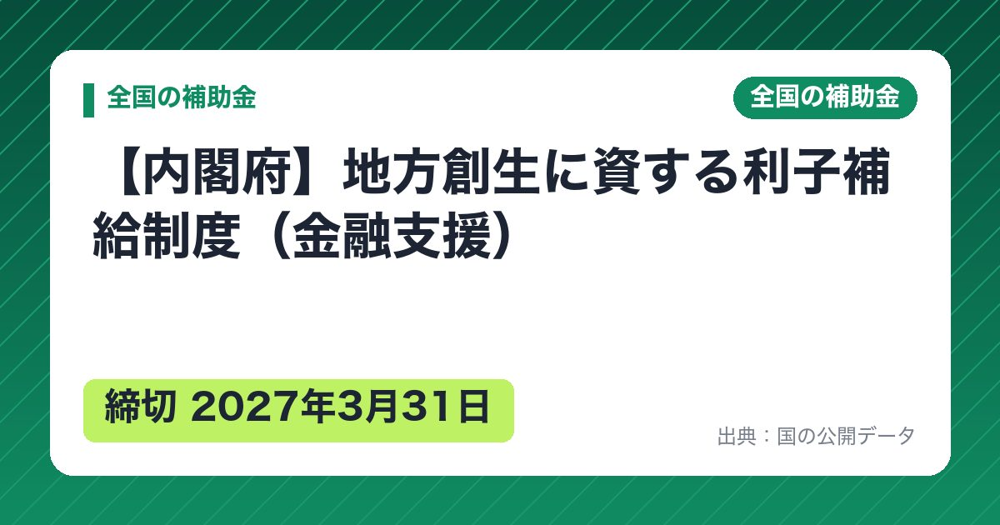

【内閣府】地方創生に資する利子補給制度（金融支援）

締切 2027年3月31日｜上限 要確認
地方創生に資する民間投資を支援するため、金融機関の融資の利子負担を軽減します。
概要
| 対象地域 | 全国 |
|---|---|
| 補助上限額 | 要確認 |
| 補助率 | 要確認 |
| 受付期間 | 2026年3月27日 〜 2027年3月31日 |
| 対象の従業員数 | 従業員数の制約なし |
| 利用目的 | 新たな事業を行いたい / 販路拡大・海外展開をしたい / 研究開発・実証事業を行いたい / 資金繰りを改善したい / 雇用・職場環境を改善したい / 安全・防災対策支援がほしい / まちづくり・地域振興支援がほしい / 設備整備・IT導入をしたい / エコ・SDGs活動支援がほしい / 教育・子育て・少子化支援がほしい |
| 対象業種 | 建設業 / 製造業 / 情報通信業 / 複合サービス事業 / サービス業（他に分類されないもの） / 農業、林業 / 鉱業、採石業、砂利採取業 / 運輸業、郵便業 / 卸売業、小売業 / 学術研究、専門・技術サービス業 / 宿泊業、飲食サービス業 / 生活関連サービス業、娯楽業 / 教育、学習支援業 / 医療、福祉 |
| 実施機関 | 地方創生支援利子補給金 |
広告補助金の申請には決算書・帳簿が必要です。会計ソフト・開業の手続きの例：
・やよいの青色申告オンライン  （個人事業主の確定申告に）
（個人事業主の確定申告に）
・無料の確定申告自動化ソフト マネーフォワード クラウド確定申告  （確定申告をかんたんに）
（確定申告をかんたんに）
・無料の会計自動化ソフト マネーフォワード クラウド会計  （法人・個人の会計を自動化）
（法人・個人の会計を自動化）
・補助金なら、パソコンとセットでお得に導入【freee会計】  （補助金を使う導入プランあり・詳細は公式で）
（補助金を使う導入プランあり・詳細は公式で）
・開業届作成するなら【弥生のかんたん開業届】  （創業補助金の前に個人で開業する方へ）
（創業補助金の前に個人で開業する方へ）
・会社設立を無料で始めるなら【弥生のかんたん会社設立】  （法人を作る方へ）
（法人を作る方へ）
公募の内容（原文の抜粋）
■参照ホームページ
※Jグランツで本利子補給金の申請受付を行っておりません。詳細については、以下HPをご確認ください。
https://www.chisou.go.jp/tiiki/rishihokyuu/index.html
■目的・概要
【地方創生に資する計画（地域再生計画、総合特別区域計画、国家戦略特別区域 区域計画）に基づく民間事業を支援するための利子補給金】
地方創生に資する民間事業を金融面から支援することにより、投資を誘発し、地域経済の活性化、国際競争力強化、雇用創出などを図るとともに、地方創生への地域金融機関等の主体的な連携・参画推進も後押しします。
※ 地域再生に資する事業を行う民間事業者が、当該事業を実施するうえで必要な資金を借り入れる場合に、国が当該金融機関を指定したうえで、利子補給金を支給します。
■利子補給金対象事業
自治体が策定・認定を受けた「地域再生計画」又は「総合特別区域計画」若しくは「国家戦略特別区域 区域計画」に寄与する以下の事業を支援します。
(1)地域再生支援利子補給金
○ 投資の誘発、雇用機会の創出など、地域経済の活性化に資する事業
○ 地域の特定政策課題の解決に資する事業
(2)総合特区支援利子補給金
○ 産業の国際競争力の強化に資する事業
○ 地域の活性化に資する事業
(3)国家戦略特区支援利子補給金
○ 産業の国際競争力の強化や国際的な経済活動の拠点形成に資する事業
※ 『地方創生支援利子補給金交付要綱』の【別表１】～【別表６】も御参照願います。
■対象事業者
認定等計画（地域再生計画、総合特別区域計画、国家戦略特別区域 区域計画）に資する事業を実施する民間事業者が、当該事業を実施するうえで必要な資金を指定金融機関から借り入れる場合が対象となります。
■利子補給率・支給期間等
(1)利子補給率
最大0.7％
(2)支給期間
5年間
(3)予算の範囲内での調整
予算の範囲内での契約・支給となるため、申請どおりの契約・支給とならないことがあります。
■応募方法
(1)地域再生及び総合特区について
・募集期間内に、指定金融機関より、メール提出。
(2)国家戦略特区について
・募集期間内に、特区計画主体より、メール提出。
※ 応募が見込まれる場合には、可能な限り事前に、又、前広に御連絡・御相談願います。
※ 応募事業の事前着手は原則認められません。
■募集期間
【令和８年４月】 ４月６日 ～ 15日
【 ７月】 ７月６日 ～ 15日
【 10月】10月１日 ～ 13日
【 12月】12月１日 ～ 10日
※ 令和９年２月は、令和９年度予算の状況等を踏まえ、別途、御案内申し上げます。
■お問合わせ先
内閣府地方創生推進事務局 利子補給担当
電話番号：03-5510-2473
E-mail:rishi.hokyu@cao.go.jp
広告
全国のほかの補助金
- 「グリーンイノベーション基金事業／次世代型地熱技術の開発」の公募（締切 2026年11月20日）
- 令和７年度（補正予算）地域脱炭素実現に向けた具体的施策実装支援事業（四次公募）（締切 2026年11月20日）
- 令和８年度地域脱炭素実現に向けた具体的施策実装支援事業（締切 2026年11月20日）
- 【三次公募】令和８年度 天然ガス利用設備による強靱性向上対策事業費補助金（締切 2026年11月20日）
- エイジフレンドリー補助金（締切 2026年11月20日）
- 「太陽光発電導入拡大等技術開発事業」の第3回公募（締切 2026年11月25日）
- 【農林水産省】中山間地域所得確保推進事業（締切 2026年11月25日）
- 「ポスト5G情報通信システム基盤強化研究開発事業（社会課題解決に向けた量子コンピュータ次世代機開発・実証の加速）」（g12-2：部素材）の追加公募（締切 2026年11月26日）